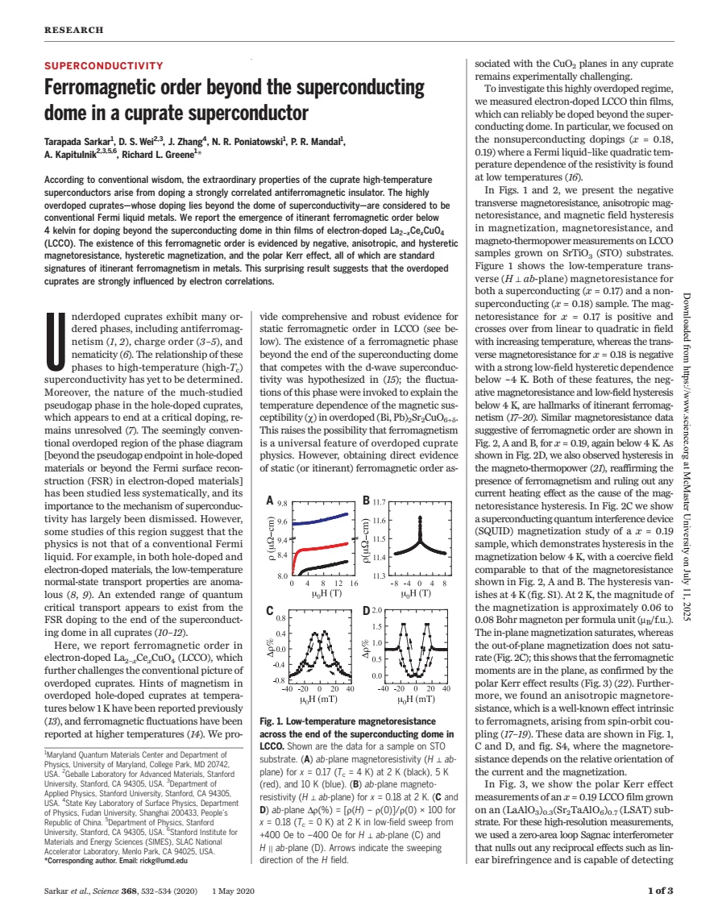
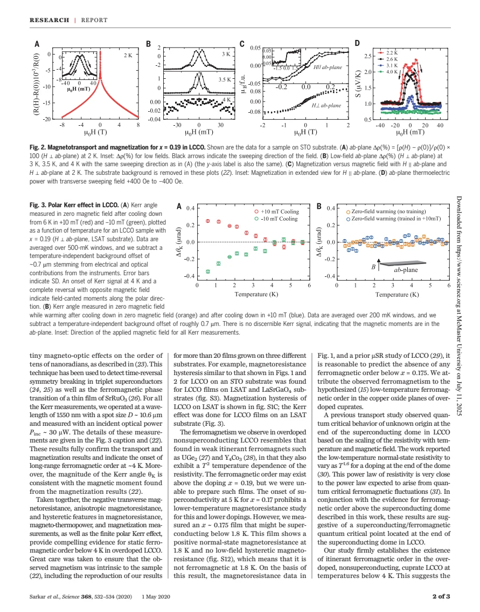

experiment · Sarkar · supplied source 2020
Ferromagnetic order beyond the superconducting dome in a cuprate superconductor
The supplied 2020 LCCO thin-film study combines hysteretic transport, magnetization and trained Kerr measurements as evidence for low-temperature ferromagnetic order beyond its superconducting dome.
The question: Are highly overdoped electron-doped LCCO films simple nonmagnetic metals?
Before you start: the few terms you need
- Itinerant ferromagnetism: spontaneous spin polarization of conducting electrons
- Hysteresis: response depends on field-sweep history
- Kerr effect: polarization rotation sensitive to time-reversal-breaking optical response
- Superconducting dome: Tc rises and falls with a tuning parameter
See → explain → test
Understand it in four pictures.
Picture 1 / 4
Locate the samples precisely
Look for: The study compares superconducting x = 0.17 with nonsuperconducting x = 0.18 and 0.19 LCCO films.
Swipe across the picture to read every label, or enlarge it below.
- x = 0.17
- x = 0.18–0.19
Teaching sample comparison; no invented doping boundary or universal cuprate phase diagram.
The reported magnetic state lies beyond the dome in these electron-doped samples.
Picture 2 / 4
Use field history
Look for: Negative and anisotropic magnetoresistance is accompanied by low-field hysteresis.
Swipe across the picture to read every label, or enlarge it below.
- Sweep field forward
- Sweep field backward
- Compare resistance branches
Teaching measurement protocol; actual hysteresis loops are in original Figs.1–2.
Multiple features are tested together, because negative magnetoresistance alone is not a unique magnetic diagnosis.
Picture 3 / 4
Compare different measurements
Look for: Magnetization, thermopower and Kerr measurements provide checks beyond electrical resistance.
Swipe across the picture to read every label, or enlarge it below.
- Transport hysteresis
- Magnetization + trained Kerr
- Ferromagnetic interpretation
Source's combined evidence. Substrate/background controls are essential; supplement not supplied.
A reproducible history-dependent signal across different probes supports the magnetic interpretation.
Picture 4 / 4
Separate the finding from the hypothesis
Look for: Order in these films is reported; competition with superconductivity and a ferromagnetic QCP are proposed explanations.
Swipe across the picture to read every label, or enlarge it below.
- Observed signatures
- Proposed consequence
Teaching evidence boundary: the second panel remains an interpretation requiring further work.
A measured phase does not by itself prove why the superconducting dome ends.
Predict before revealing
Why does the paper add magnetization, thermopower and Kerr measurements to negative magnetoresistance?
Choose an answer, then compare the reasoning.
The interpretation rests on a combined pattern, while a QCP and competition with superconductivity remain proposed consequences.
Read the answer
Independent probes and controls strengthen the magnetic diagnosis and test alternative origins The interpretation rests on a combined pattern, while a QCP and competition with superconductivity remain proposed consequences.
Go deeper Follow the full argument
What makes these films a useful comparison
LCCO is an electron-doped cuprate whose Ce concentration can be increased past the end of superconductivity in thin films. The paper focuses on x = 0.18 and 0.19, where the studied samples are nonsuperconducting and show low-temperature quadratic resistivity, and compares them with x = 0.17. The conceptual challenge is that a T² metal beyond a superconducting dome is often assumed to be a nearly conventional, nonmagnetic Fermi liquid. The authors ask whether a magnetic ordered state has been overlooked at very low temperature. The scope matters: these are specified films, substrates and doping values. The paper does not measure every overdoped cuprate, and the words 'beyond the dome' do not by themselves specify the phase behavior of all hole- and electron-doped materials.
Follow the magnetoresistance evidence carefully
For x = 0.18 and 0.19 the transverse magnetoresistance becomes negative and strongly hysteretic below about 4 K. Its dependence on field orientation relative to current and magnetization is also examined. In comparison, the superconducting x = 0.17 film has positive normal-state magnetoresistance in the measured regime. A field-sweep loop matters because it reveals history dependence characteristic of magnetic domains rather than merely a smooth change of scattering rate. However, negative magnetoresistance can have several origins, so the authors do not rely on its sign alone. They compare the hysteresis with magnetization and thermopower measurements. Thermopower provides a particularly useful check against an explanation based only on electrical current heating in the resistance measurement, since it probes a different transport response.
Magnetization and Kerr supply independent checks
After substrate background subtraction, the magnetization shows a low-field hysteresis with a coercive scale comparable to the transport loop. The reported moment at 2 K is approximately 0.06–0.08 Bohr magneton per formula unit. The field-direction comparison indicates predominantly in-plane moments. Kerr measurements use a zero-area-loop Sagnac interferometer, designed to reject reciprocal optical effects. Cooling with opposite small perpendicular training fields reverses the Kerr signal below roughly 4 K, while zero-field cooling produces no discernible polar Kerr signal. These conditions are not contradictory: a predominantly in-plane moment may have a field-trained out-of-plane component detectable by polar Kerr. The optical data should therefore be read with the training direction and background subtraction, rather than reduced to 'Kerr is nonzero in every measurement.'
How controls support an intrinsic-film interpretation
The main text reports reproduction over more than twenty films grown on three substrates, including transport loops on different substrates and Kerr measurements on LSAT. This helps challenge an explanation tied to only one substrate or one sample. The quantitative background procedures, materials methods and additional control figures are referred to a separate supplement, which is not included among the supplied PDFs. The lesson therefore attributes those controls to the main text without claiming an independent inspection of the missing supplement. Taken together, hysteretic transport, magnetization and trained Kerr response are presented as compelling evidence for low-temperature ferromagnetic order in the studied overdoped films. The inference relies on the combined experimental pattern and its controls, rather than a single response that uniquely labels the microscopic state.
Keep the quantum-critical claim at its proper level
The authors connect their ferromagnetic phase to earlier transport work near the dome endpoint, where a resistivity exponent around 1.6 had been reported. They regard this as suggestive of ferromagnetic critical fluctuations and a possible superconducting/ferromagnetic quantum critical point. That exponent was not newly established across an entire phase boundary by the measurements in this paper. Nor does observing magnetism prove a quantitative mechanism for the loss of Tc or superfluid density. The source explicitly calls for further work on the nature and consequences of the magnetic phase. Read the historical 2020 conclusion in two parts: the films show a strong combined magnetic signature; the proposed competition and criticality are an explanation to test. This distinction allows the surprising result to inform wider cuprate questions without turning its extrapolations into universal facts.
Translate the mathematics Key equations and symbol meanings
Δρ(H)/ρ(0) = [ρ(H) − ρ(0)]/ρ(0)
Symbols: ρ(H): resistivity at applied field H; ρ(0): zero-field reference; multiply by 100 for percent.
Defines the plotted magnetoresistance. Its sign, anisotropy and sweep-history dependence are separate pieces of evidence.
ρ(T) − ρ0 ∝ T² (overdoped metallic regime)
Symbols: ρ0: residual resistivity; T: temperature.
Quadratic transport can coexist with itinerant ferromagnetism; it does not prove absence of electron correlations or magnetic order.
Read the evidence A guided look at the original figures

Open the full original page ↗

Open the full original page ↗
Open the full original page ↗
What this paper does—and does not—establish
- Historical 2020 thin-film study; no universal claim for all overdoped cuprates is established here.
- Separate supplement contains methods and Figs.S1–S12 but is absent from the supplied folder; its controls are reported, not independently inspected.
- Ferromagnetic competition and a QCP at the dome endpoint are interpretations requiring further tests.
Explain it back.
Try answering aloud before opening the explanation.
Which doping range supplies the main magnetic evidence?
The studied nonsuperconducting x = 0.18 and 0.19 LCCO films, below about 4 K.
Why can trained polar Kerr be present despite mainly in-plane moments?
A perpendicular training field can cant a component out of plane; zero-field cooling need not produce a polar signal.
Is the proposed QCP itself directly mapped in this report?
No. It is inferred as a possibility using the magnetic evidence and earlier transport work.
Connect the next paper.
Source version, reading coverage and preservation
All three pages read; rendered transport, magnetization and Kerr figures on pages 1–2 checked.
Reviewed body pages: 1, 2, 3. External supplementary methods/text/Figs.S1–S12 and their references are not supplied; cited works not independently re-read.
Original file retained byte for byte. SHA-256: bf2d933335be7f8837447ae35370985b883bdaa636165b29c66ed42bca0d3098
Filename: Science - Sarkar - Ferromagnetic order beyond the dome in LCCO - 2020.pdf.